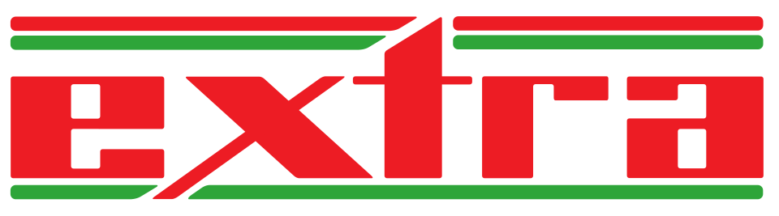

대표 로고대표 브랜드 마크
대표 로고대표 브랜드 마크홈 > 브랜드 매거진 > 홈플러스
홈플러스
홈플러스(Homeplus)는 한국 2위 대형마트 체인으로, 1997년 삼성물산 유통부문에서 출발해 2011년 현 사명이 됐다.
산업 분야 리테일·커머스 · 공개 등급 자료 기반 · 브랜드 평가 4.2 ★
한눈에 보는 브랜드
홈플러스는 1997년 9월 삼성물산 유통부문이 대구에 첫 점포를 열며 출범한 대형마트 브랜드다. 첫 전환점은 1999년 영국 테스코와의 합작으로 삼성테스코 체제가 출범하며 전국망을 빠르게 구축한 것이고, 두 번째 전환점은 2011년 테스코 단독 체제 아래 '홈플러스' 사명으로 정비된 뒤 2015년 사모펀드 MBK파트너스에 약 7조2000억원에 매각되며 자본 주인이 바뀐 일이다.
한때 대형마트 업계 2위로 전국 100여 개 점포를 운영하며 이마트와 함께 시장을 이끈 핵심 유통 기업이다.
브랜드 관점
홈플러스를 읽는 핵심은 '점포라는 자산을 어떻게 다뤘는가'에 있다. 1위 이마트가 점유율 약 40%로 신선식품 직소싱과 자체 점포망을 무기로 삼은 반면, 홈플러스와 롯데마트는 각 20% 안팎에서 2~3위를 다퉜다.
MBK파트너스는 차입매수(LBO) 방식으로 인수한 뒤 알짜 점포를 팔고 다시 임차해 쓰는 세일즈앤리스백을 반복해 차입금을 갚았는데, 이 과정에서 외형과 투자 여력이 함께 줄어든 점이 경쟁사와 갈린 결정적 차이다. 신용등급 하락이 단기 유동성 위기로 번지자 2025년 3월 서울회생법원에 기업회생을 신청했고, 이후 익스프레스 매각과 대형마트 일부 영업중단으로 이어졌다.
최근 변화의 함의는 분명하다. 쿠팡 등 이커머스와 다이소로 분산된 소비 속에서 대형마트의 전체 매출 비중 자체가 한 자릿수로 내려앉았고, 오프라인 거점만으로는 버티기 어려워졌다는 구조 신호다.
한국 시장에서 홈플러스의 위기는 한 기업의 문제를 넘어 대형마트 업태 전반의 축소 국면을 보여주는 사례로 다뤄진다.
시작과 성장
홈플러스의 출발점은 1990년대 후반 한국 유통시장의 격변기다. 1996년 유통시장 개방 이후 대형 할인점이 급속히 확산되던 흐름 속에서, 1997년 9월 삼성물산 유통부문이 대구 칠성동에 첫 점포를 열며 사업을 시작했다.
그러나 개점 직후 IMF 외환위기가 닥치며 삼성 구조조정 대상에 올랐고, 이것이 첫 번째 전환점이 됐다. 삼성물산은 영국 테스코에 유통부문 경영권과 지분을 넘겼고, 1999년 합작법인 삼성테스코가 출범하면서 홈플러스는 글로벌 유통 노하우와 자본을 등에 업게 됐다.
두 번째 전환점은 2011년으로, 테스코 단독 체제 아래 '홈플러스'라는 단일 사명으로 정비됐다. 이후 대형마트를 축으로 슈퍼마켓형 익스프레스와 온라인몰까지 채널을 넓히며 전국 100여 개 점포망을 갖춘 2위 사업자로 성장했다.
2015년 테스코가 한국 사업을 정리하면서 MBK파트너스가 인수해 다시 주인이 바뀌었고, 이 자본 구조 변화가 이후 행보를 좌우하는 분기점이 됐다.
브랜드 아이덴티티
홈플러스의 정체성은 '먹거리 중심의 동네 장보기 공간'으로 수렴한다. 2018년 21년 만에 BI를 바꾸며 기존의 빨강 기조는 유지하되 두 개의 타원이 겹친 '플러스' 심볼을 더해, 고객 혜택을 키우고 선택의 폭을 넓힌다는 의미를 담았다.
대표 슬로건 '오늘도 신선한 생각'은 신선식품을 핵심 가치로 내세운 방향성을 압축한다. 비주얼은 빨강을 주조색으로 활기와 가성비를 전달하고, 보이스는 친근하고 실용적인 생활 밀착형 어조를 택한다.
주된 타깃은 가족 단위 장보기 소비자이며, 신선식품을 대폭 강화한 '메가푸드마켓' 리뉴얼과 '세상 모든 맛이 살아있다'는 메시지로 대형마트가 가장 잘하는 영역에 집중하는 색을 분명히 했다.
제품과 서비스
점포 포맷은 대형마트(하이퍼마켓)를 본체로, 신선·즉석식품을 강화한 '메가푸드마켓' 리뉴얼형, 슈퍼마켓 규모의 '홈플러스 익스프레스'로 나뉜다. 자체 브랜드(PB)는 가성비 라인 '심플러스'를 중심으로 통합해왔다.
채널 측면에서는 오픈마켓 성격의 '마이홈플러스'를 통해 점포 예약배송인 마트직송과 익스프레스 거점 기반 즉시배송 '바로배송'을 운영하며 온·오프라인을 연결한다.
현재 상태
지배구조상 최대주주는 사모펀드 MBK파트너스이며, 2025년 3월 서울회생법원에 기업회생을 신청해 절차가 진행 중이다. 점포는 대형마트 104개 가운데 기여도가 낮은 37개의 영업을 중단하고 67개를 중심으로 집중 운영하는 체제로 재편됐다.
슈퍼마켓 브랜드 홈플러스 익스프레스는 하림그룹 계열 NS홈쇼핑에 약 1206억원에 매각돼 2026년 영업양수가 진행됐고, 대형마트·온라인 등 잔존사업도 매각이 추진되고 있다. 실적은 2025 회계연도 기준 매출 5조7963억원, 영업손실 5464억원, 당기순손실 약 1조10억원으로 적자가 이어졌다.
본사 소재지와 임직원 수 등 세부 정보는 미공개.
타임라인
정리된 연도형 이벤트가 없습니다.
BI/CI 변천사
대표 로고대표 브랜드 마크함께 읽을 브랜드
 리테일·커머스 · 자료 기반롯데마트
리테일·커머스 · 자료 기반롯데마트롯데마트(Lotte Mart)는 롯데쇼핑이 운영하는 대형마트 체인으로, 1998년 서울에 1호점을 열었다.
 리테일·커머스 · 자료 기반이마트
리테일·커머스 · 자료 기반이마트이마트(emart)는 신세계그룹이 1993년 설립한 대한민국 최대 규모의 대형 할인마트 체인이다.
 리테일·커머스 · 자료 기반쿠팡
리테일·커머스 · 자료 기반쿠팡쿠팡(Coupang)은 한국을 대표하는 이커머스 기업으로, 인터브랜드 2025 베스트 코리아 브랜드에서 처음으로 Top 10(10위)에 진입했다.
 리테일·커머스 · 자료 기반신세계
리테일·커머스 · 자료 기반신세계신세계(Shinsegae)는 신세계그룹의 대표 백화점 기업으로, 1963년 신세계 명칭을 채택한 한국 3대 백화점 중 하나다.
 리테일·커머스 · 디렉토리다이소
리테일·커머스 · 디렉토리다이소다이소는 대한민국의 생활용품 균일가 리테일 브랜드입니다. 문구, 주방, 수납, 청소, 뷰티, 식품 등 일상용품을 폭넓게 판매합니다.
 리테일·커머스 · 자료 기반컬리
리테일·커머스 · 자료 기반컬리컬리(Kurly)는 마켓컬리를 운영하는 한국의 온라인 신선식품 기업으로, 새벽배송 '샛별배송'을 개척했다.
 리테일·커머스 · 자료 기반롯데백화점
리테일·커머스 · 자료 기반롯데백화점롯데백화점은 롯데쇼핑이 운영하는 대한민국의 대표 백화점 브랜드다. 1979년 서울 소공동 본점을 열었으며 국내 백화점 업계 1위로 최다 점포망을 갖췄다.

리테일·커머스 · 자료 기반Extra엑스트라(Extra)는 1996년 독일에서 메트로(Metro) 그룹 산하로 신설된 슈퍼마켓 체인이었다. 2008년 레베(Rewe) 그룹에 매각되며 브랜드가 사라졌다.